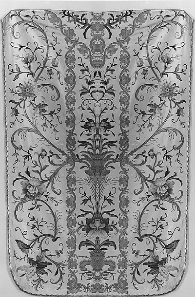
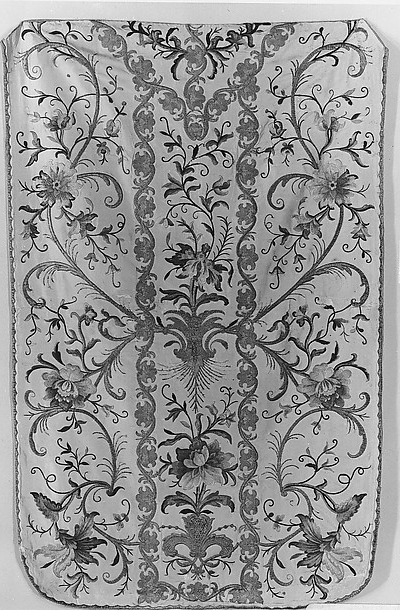
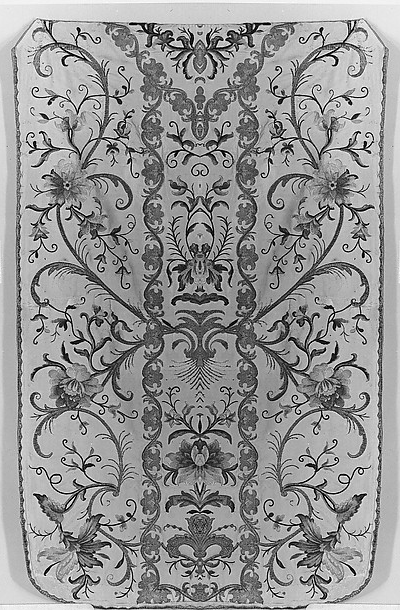

A center, made into an axis
The seam
I added.
Flowers and birds gather around the chasuble's middle. I reflected each side across it. The two doubled versions look related, but their centers grow from different halves.
ChasubleSilk and metal thread on silk
18th century
Met object 227812
18th century
Met object 227812



One axis / two choices
Which half gets to multiply?
The left version carries a flower into the center; the right brings a narrow spray and small loops. Each makes a different ornamental body. Their exact balance is an edit, not evidence that the original was stitched from matching halves.
I used the vertical line at pixel 214 in the supplied photograph as my axis. The red hairline shows where the two copies meet. I trimmed the photograph to the textile for all three panels; the uncropped source remains linked below.